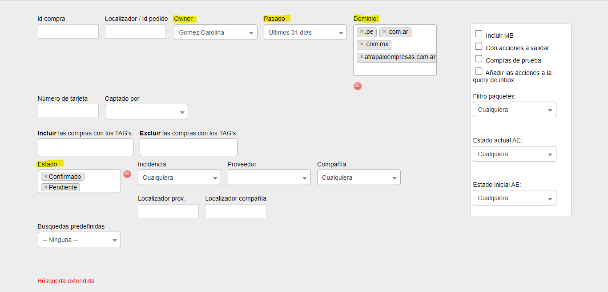

Para poder comenzar la gestión de pedidos de vuelos vamos a ir al Admin de Vuelos
En el panel de búsqueda vamos a filtrar de la siguiente manera:

Se deben colocar el nombre del agente, últimos 31 días, dominio (todos) y estados (confirmados/pendientes)
Ya pudiendo visualizar los pedidos asignados vamos a comenzar a gestionar los pedidos en este orden de prioridades:
Se cobra por separado:
Monto aéreo ↠
Se cobra por UATP en la mayoría de los casos (número de comercio de la aerolínea)
Cargo de gestión Atrápalo + Seguros/Asientos ↠
Se cobra por ADMIN siempre (número de comercio Atrapalo)
Son los cobros que se realizan con el comercio de la compañía aérea
Se pueden cobrar directamente desde el GDS (menos Amadeus), o bien por Payway(Lapos), Webpostnet, según que tarjeta se este usando.
Es súper importante verificar el número de comercio por donde se va a cobrar; esto lo podemos hacer desde la planilla
Condiciones de emisión aerolíneas
Al cobrar de manera UATP, en admin quedará registrado en la caja de cobros sólo lo cobrado con comercio Atrápalo, es decir el feeo de gestión Atrápalo, seguros, Asistencia web, asientos, servicios, etc.
Si no es posible avanzar UATP, vamos a cobrar por admin y emitir cash.
Para poder cambiar la forma de pago en el admin, debemos ir a
***Operaciones sobre el pedido - Cobramos todo por atrapalo***.
En la caja de cobros va a figurar el total de la reserva a pagar por el pasajero.
Estos casos pueden ser porque el pasajero paga en efectivo, con tc Débito, si quisiera abonar con más de una tarjeta de crédito, si son cuotas con interés y en caso que sea la misma aerolínea que no permita UATP.
Actualmente contamos con estos 3 gds principales para cobro y emisión